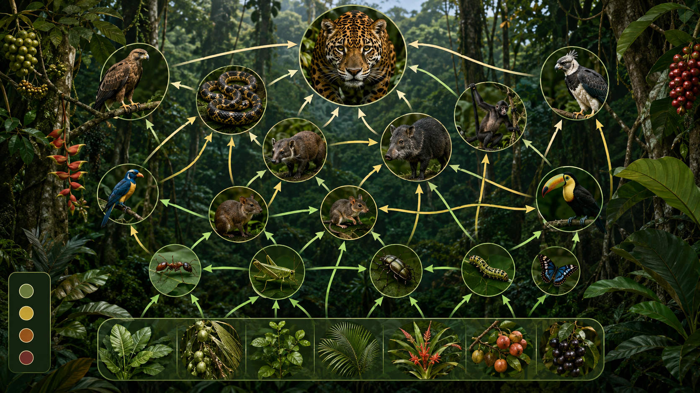
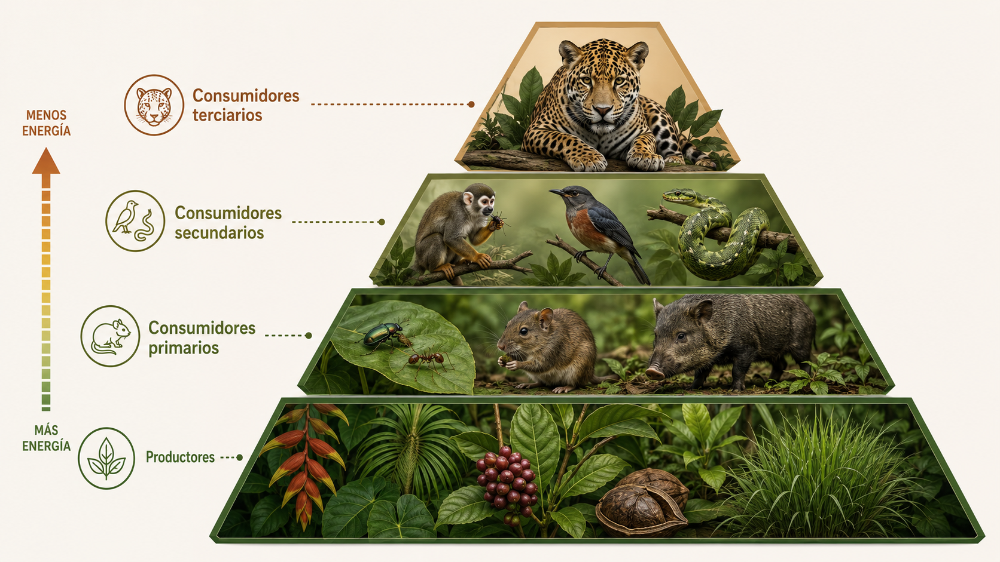
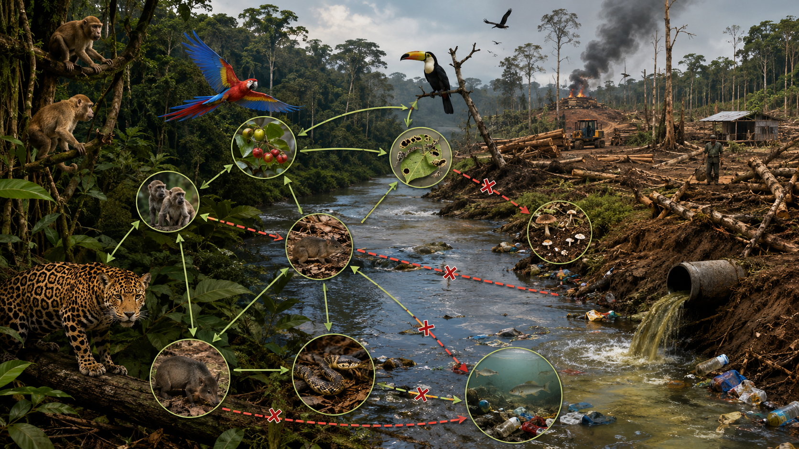
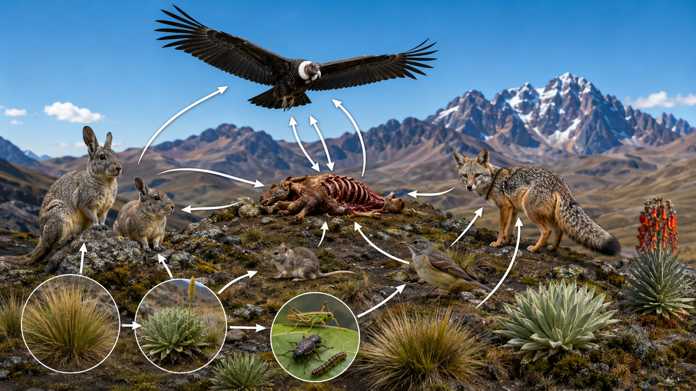

La vida no funciona en línea recta.
Una red trófica conecta muchas rutas de alimentación al mismo tiempo y muestra cómo circulan la materia y la energía en un ecosistema real.

Pregunta guía: ¿por qué una red trófica representa mejor la realidad que una cadena aislada?

Energía, biomasa y niveles tróficos
La energía disminuye en cada transferencia porque una parte se usa en movimiento, respiración y metabolismo, y otra se pierde en forma de calor.
La pirámide no solo ordena especies: también explica por qué no puede haber muchos grandes depredadores.
Amazonía peruana: la red del jaguar
El jaguar actúa como depredador tope. Su presencia ayuda a regular poblaciones de mamíferos medianos y mantiene el equilibrio ecológico.
Secuencia simplificada: plantas → insectos / roedores / pecaríes → serpientes / aves → jaguar.
Cuando se altera una especie, se altera toda la red
La deforestación y la contaminación reducen productores, desplazan consumidores y rompen rutas de alimentación.

Mensaje central: conservar biodiversidad también significa conservar el flujo de energía y materia.

Andes del Perú: el cóndor y la carroña
En la región andina, el cóndor andino es un consumidor carroñero clave en el reciclaje de materia orgánica.
Comparación final: jaguar amazónico = depredador tope; cóndor andino = carroñero clave en el reciclaje de materia.